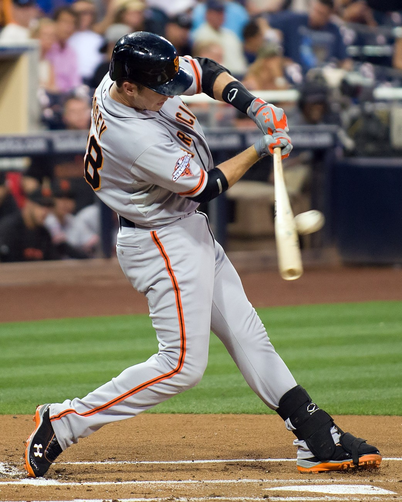
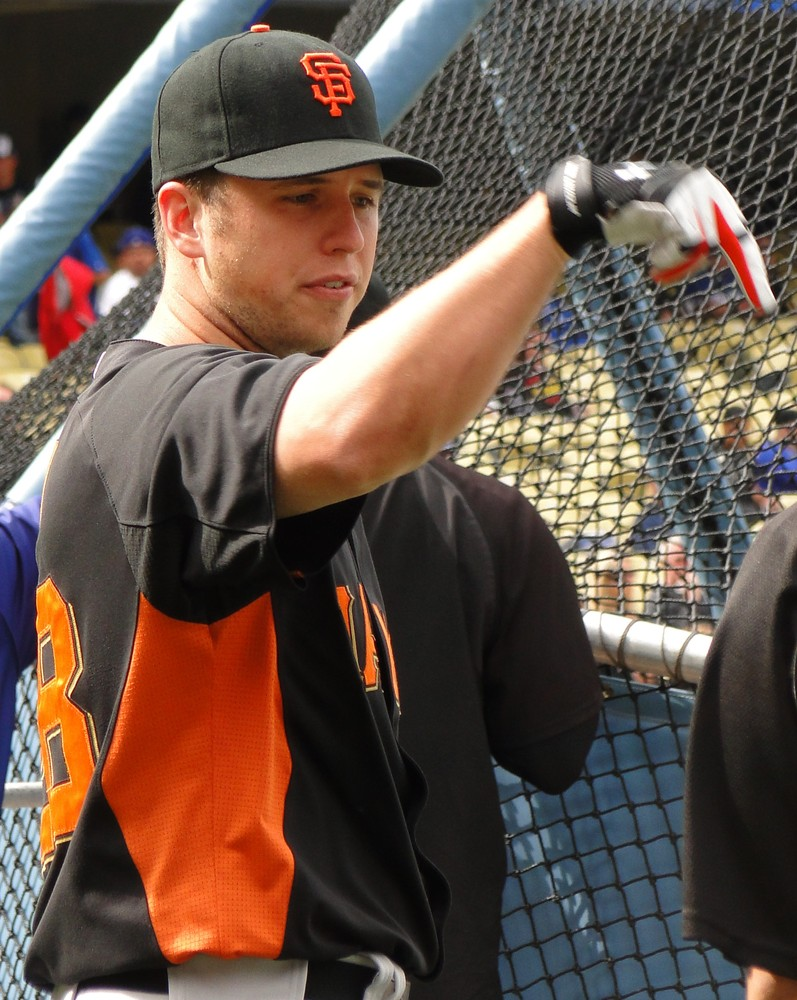
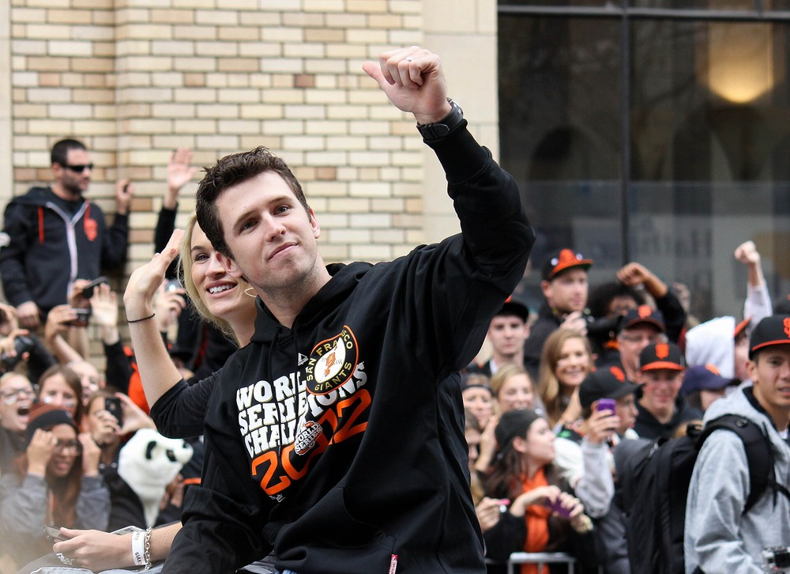
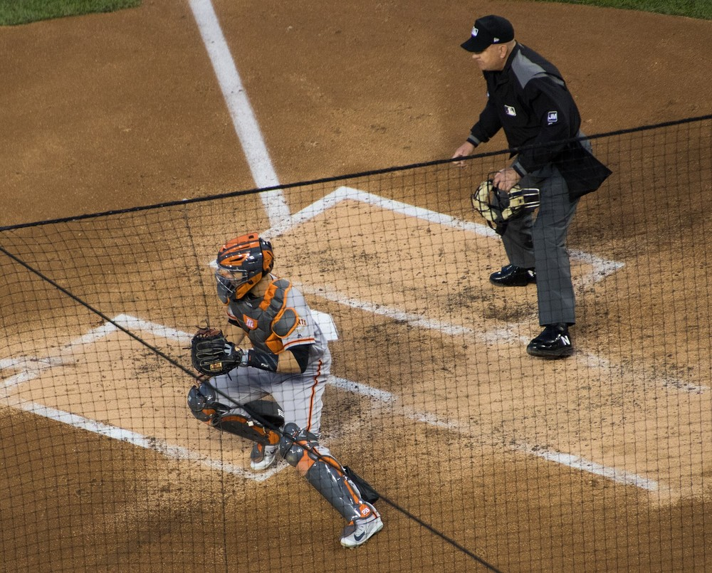

Buster Posey
Three rings in five years, an MVP and a batting title from behind the plate, and the calmest face in every October storm we ever lived through.
The Buster Posey Story
Every team gets a star now and then. We got a catcher who showed up in the middle of 2010, took over the cleanup spot, and then just kept winning until we had three parades in five years. Buster Posey never looked rattled, never looked like the moment was bigger than him, and for a dozen years he was the one guy on the field you'd trust with everything.
He was born Gerald Dempsey Posey III on March 27, 1987, in Leesburg, Georgia, and the Buster came from his dad's childhood nickname. He grew up a Braves fan, played four sports, and at Lee County High he pitched and played shortstop. As a senior he hit .462 with a school record 14 homers and went 12 and 0 on the mound with a 1.06 ERA. Jason Heyward's Henry County club beat his team in the state final, which is a funny little footnote now.
He went to Florida State as a shortstop and started all 65 games as a freshman. Then an assistant coach, Mike Martin Jr., talked him into catching. That turned out to be a decent idea. As a junior in 2008 he hit .463 with 26 homers and 93 RBIs, played all nine positions in one game against Savannah State, and swept the big college awards: the Golden Spikes, the Dick Howser Trophy and the Johnny Bench Award. In 2019 they renamed that last one the Buster Posey Award.
The Giants took him fifth overall in the 2008 draft and gave him a $6.2 million bonus, the biggest up front bonus in team history. He tore through San Jose and Fresno, got a September look in 2009, and struck out against Hiroki Kuroda in his first big league at bat. Fine. He came up for good on May 29, 2010, went 3 for 4 with three RBIs that night, and when the Giants traded Bengie Molina to Texas on June 30, the job was his.
That rookie summer was ridiculous. Over ten games in early July he hit .514 with six homers, a National League record for a rookie over that kind of stretch. He had a 21 game hitting streak, won Player and Rookie of the Month for July, and settled into the four hole like he'd been there for years. He homered in the eighth to beat the Padres 3 to 0 on the last day of the season and clinch the West, hit .305 with 18 homers, and won Rookie of the Year. Then he caught every single inning of the postseason, and we won the whole thing for the first time in San Francisco.
On May 25, 2011, Scott Cousins of the Marlins ran him over at the plate in the 12th inning at AT&T Park. Broken fibula, torn ankle ligaments, season over. It was awful to watch. Posey's response was to tell fans to leave Cousins and his family alone, and the play ended up changing the sport: the rule against running over catchers that MLB adopted for 2014 is still called the Buster Posey Rule.
He came back in 2012 and had one of the best seasons a catcher has ever had. He caught Matt Cain's perfect game in June, made his first All Star team, hit .385 after the break, and finished at .336 with 24 homers and 103 RBIs. That was the best average in baseball and the first NL batting title for a catcher since Ernie Lombardi in 1942. He won the MVP, Comeback Player of the Year and the Hank Aaron Award, and in October he hit the grand slam in Cincinnati and the go ahead homer in the World Series clincher in Detroit.
In March 2013 the Giants gave him eight years and $167 million, the richest deal in franchise history. He caught Tim Lincecum's no hitter in San Diego that July. In 2014 he hit .311, and he and Madison Bumgarner hit grand slams in the same game, which had never happened for a battery before. That October we won a third title, and Posey became just the second player ever, after Pete Rose, with a Rookie of the Year, an MVP and three World Series rings.
The run of seasons after that was steady excellence. He caught Chris Heston's no hitter at Citi Field in 2015, won the Wilson Defensive Player of the Year award in 2015 and 2016, broke Yadier Molina's eight year hold on the NL Gold Glove at catcher in 2016, and kept making All Star teams. In the spring of 2017 he helped Team USA win its first World Baseball Classic, and that May he caught all 17 innings against the Reds and then won it with a walk off homer, the latest one in franchise history.
The hip finally caught up with him. A torn labrum ended his 2018 in August, and 2019 was the worst offensive year of his career, .257 with seven homers. He opted out of the shortened 2020 season, mostly because he and Kristen were adopting premature twin girls during the pandemic. A lot of people wondered if he was done.
He wasn't. In 2021 he homered on his first swing back, became the first Giant ever to catch 1,000 games, made his seventh All Star team, and hit .304 with an .889 OPS for a team that won a franchise record 107 games. He homered off Walker Buehler in Game 1 of the NLDS. We lost that series to the Dodgers in five, and on November 4 he retired at 34, still one of the best catchers alive. Nobody's ever hit higher in a final season as a catcher.
He's been running things ever since. He joined the ownership group in September 2022, took over as president of baseball operations on September 30, 2024, and on August 8, 2026 his plaque went up on the Giants Wall of Fame alongside Pablo Sandoval, Brandon Crawford, Brandon Belt and Joe Panik. He and Kristen also started the BP28 Foundation in 2016 to fight pediatric cancer.
What He Meant to Us
I'll just say it. Buster Posey is the best Giant of my lifetime who wasn't named Barry, and in October he was better than anybody. Three rings in five years. He was 23 when the first one came and 27 when he had all three, and he caught nearly every big pitch along the way.
What got me was how ordinary he made it look. He'd come up in the most insane spot imaginable, Game 5 in Cincinnati, season on the line, bases loaded, and he'd hit it out like it was a Tuesday in June. Then he'd go back behind the plate and talk Bumgarner or Cain or Lincecum through another inning. He never panicked, so we didn't either. Well, we did. But less.
The Cousins collision still makes me wince. Watching him writhe on the ground at our own ballpark in 2011, I honestly thought we might've lost the best young player we'd had in years. Instead he came back the next season and won the batting title and the MVP, and somewhere in there he told fans to quit threatening the guy who hurt him. That's who he was.
And now he's running the whole operation. Whatever you think of the moves, I'll always give him more rope than anybody else in that chair, because I watched him win three of them. When his plaque went up on the Wall of Fame next to Panda and Craw and Belt and Panik, it felt like the whole even year family was back home for one more night.
In Pictures



Why He Was Clutch
Catchers don't get to be clutch the way sluggers do. Half their October is spent calling pitches, blocking dirt balls and keeping a 21 year old lefty calm. Posey did all of that, every inning of the 2010 postseason as a rookie, and then he kept coming up with the hit anyway.
Look at the swings. Last day of 2010, he homers in the eighth of a 3 to 0 win that clinches the division. Game 4 of the 2010 World Series, he homers off Darren O'Day to make it 4 to 0 behind Bumgarner. Game 5 of the 2012 NLDS, down two games to none in the series and facing elimination for the third straight night, he hits a grand slam off Mat Latos to make it 6 to 0. Game 4 of the 2012 World Series, the Giants down 2 to 1 in the sixth, he takes Max Scherzer out to left for the lead. That's four of the biggest swings in modern Giants history, from the same guy.
And the thing I always come back to is the face. Whether it was a 3 and 2 count with the season on the line or the last out of a perfect game, he looked exactly the same. Three rings before he turned 28. We were so lucky.
Clutch Moments
- October 3, 2010
The homer that clinched the West
Last game of the regular season, Padres at AT&T Park, and the Giants needed one more win to take the NL West. Posey hit an eighth inning homer off Luke Gregerson, the Giants won 3 to 0, and a rookie catcher had just sent us to October.
- October 31, 2010
Rookie battery, World Series shutout
Game 4 in Arlington. Posey and Madison Bumgarner became the first rookie battery to start a World Series game since Yogi Berra and Spec Shea in 1947, and they combined with Brian Wilson on a 4 to 0 shutout. Posey added a solo homer to center off Darren O'Day in the eighth, his first postseason home run. The next night we won the World Series.
- June 13, 2012
Catching the perfect game
Matt Cain against the Astros at AT&T Park, 27 up and 27 down, the 22nd perfect game in big league history. Posey caught every pitch of it and admitted afterward he was as nervous as he'd ever been on a baseball field. You'd never have known it watching him.
- October 11, 2012
Grand slam in Cincinnati
The Giants had lost the first two games of the 2012 NLDS at home and won two straight in Cincinnati to force Game 5. Scoreless into the fifth, they scratched across two, and then with the bases loaded Posey hit a grand slam to left off Mat Latos to make it 6 to 0.
He also started a strikeout throw out double play at third in the sixth. The Reds clawed back to 6 to 4 but never caught up, and the Giants became the first NL team to come back from 2 and 0 down in a best of five since the format went permanent in 1995.
- October 28, 2012
Go ahead blast off Scherzer
Game 4 of the World Series at Comerica Park, Giants up three games to none but trailing 2 to 1 in the sixth. With Marco Scutaro aboard, Posey hit a two run homer to left off Max Scherzer for a 3 to 2 lead. Detroit tied it, Scutaro won it with a single in the tenth, and Sergio Romo struck out Miguel Cabrera to finish the sweep. Ring number two.
- July 13, 2014
Two grand slams from one battery
Down 1 to 0 to Arizona in the fifth, Posey cleared the bases with a grand slam off Vidal Nuño, scoring Bumgarner, Hunter Pence and Pablo Sandoval. An inning later Bumgarner hit one of his own. It was the first time in major league history a pitcher and catcher hit grand slams in the same game, and the Giants won 8 to 4.
- October 8, 2021
One last October homer
Game 1 of the 2021 NLDS against the Dodgers at Oracle Park. In the first inning Posey hit a two run homer to right off Walker Buehler that bounced off a water tower and into the bay, about as close as a right handed hitter has come to a true McCovey Cove splash. The Giants won 4 to 0. It was the last postseason homer of his career.
The Highlights
What They Said About Posey
“But in no way do I condone threats of any kind against Scott Cousins or his family. As I said last week, I'm not out to vilify Scott.”
“To me, this is what encapsulates baseball: it's a lot more than winning or losing games. It's about the time spent with family. The countless nights and days pulling for your team, riding the emotions of the highs, riding the emotions of the lows.”
“It doesn't take long to realize that some organizations are better than others. This is a first class organization.”
“No doubt the camaraderie with the teammates in the clubhouse and the thrill of winning a great game.”
“A few years from now, it’s going to be so cool to see my friend enshrined in Cooperstown, and then to visit the Hall of Fame and see that bronze bust of him wearing the San Francisco Giants cap.”
Career Stats
| Year | Team | G | AB | R | H | 2B | 3B | HR | RBI | SB | BB | AVG | OBP | SLG | OPS |
|---|---|---|---|---|---|---|---|---|---|---|---|---|---|---|---|
| 2009 | SF | 7 | 17 | 1 | 2 | 0 | 0 | 0 | 0 | 0 | 0 | .118 | .118 | .118 | .236 |
| 2010 | SF | 108 | 406 | 58 | 124 | 23 | 2 | 18 | 67 | 0 | 30 | .305 | .357 | .505 | .862 |
| 2011 | SF | 45 | 162 | 17 | 46 | 5 | 0 | 4 | 21 | 3 | 18 | .284 | .368 | .389 | .757 |
| 2012 | SF | 148 | 530 | 78 | 178 | 39 | 1 | 24 | 103 | 1 | 69 | .336 | .408 | .549 | .957 |
| 2013 | SF | 148 | 520 | 61 | 153 | 34 | 1 | 15 | 72 | 2 | 60 | .294 | .371 | .450 | .821 |
| 2014 | SF | 147 | 547 | 72 | 170 | 28 | 2 | 22 | 89 | 0 | 47 | .311 | .364 | .490 | .854 |
| 2015 | SF | 150 | 557 | 74 | 177 | 28 | 0 | 19 | 95 | 2 | 56 | .318 | .379 | .470 | .849 |
| 2016 | SF | 146 | 539 | 82 | 155 | 33 | 2 | 14 | 80 | 6 | 64 | .288 | .362 | .434 | .796 |
| 2017 | SF | 140 | 494 | 62 | 158 | 34 | 0 | 12 | 67 | 6 | 61 | .320 | .400 | .462 | .862 |
| 2018 | SF | 105 | 398 | 47 | 113 | 22 | 1 | 5 | 41 | 3 | 45 | .284 | .359 | .382 | .741 |
| 2019 | SF | 114 | 405 | 43 | 104 | 24 | 0 | 7 | 38 | 0 | 34 | .257 | .320 | .368 | .688 |
| 2021 | SF | 113 | 395 | 68 | 120 | 23 | 0 | 18 | 56 | 0 | 56 | .304 | .390 | .499 | .889 |
| Career | 1371 | 4970 | 663 | 1500 | 293 | 9 | 158 | 729 | 23 | 540 | .302 | .372 | .460 | .832 |
Every big league game he ever played came for the Giants. He opted out of the 2020 season. Postseason lines built from his game logs. Scroll the table sideways on a phone.
Postseason
| Year | Team | Series | Opp | G | AB | R | H | 2B | 3B | HR | RBI | BB | AVG |
|---|---|---|---|---|---|---|---|---|---|---|---|---|---|
| 2010 | SF | NLDS | ATL | 4 | 16 | 3 | 6 | 1 | 0 | 0 | 0 | 2 | .375 |
| 2010 | SF | NLCS | PHI | 6 | 23 | 1 | 5 | 2 | 0 | 0 | 3 | 3 | .217 |
| 2010 | SF | WS | TEX | 5 | 20 | 2 | 6 | 0 | 0 | 1 | 2 | 1 | .300 |
| 2012 | SF | NLDS | CIN | 5 | 19 | 3 | 4 | 0 | 0 | 2 | 5 | 3 | .211 |
| 2012 | SF | NLCS | STL | 7 | 26 | 1 | 4 | 0 | 0 | 0 | 1 | 4 | .154 |
| 2012 | SF | WS | DET | 4 | 15 | 1 | 4 | 0 | 0 | 1 | 3 | 1 | .267 |
| 2014 | SF | WC | PIT | 1 | 5 | 1 | 2 | 0 | 0 | 0 | 1 | 0 | .400 |
| 2014 | SF | NLDS | WSH | 4 | 18 | 0 | 7 | 0 | 0 | 0 | 1 | 1 | .389 |
| 2014 | SF | NLCS | STL | 5 | 20 | 3 | 4 | 0 | 0 | 0 | 3 | 2 | .200 |
| 2014 | SF | WS | KC | 7 | 26 | 1 | 4 | 0 | 0 | 0 | 2 | 3 | .154 |
| 2016 | SF | WC | NYM | 1 | 3 | 0 | 0 | 0 | 0 | 0 | 0 | 1 | .000 |
| 2016 | SF | NLDS | CHC | 4 | 15 | 1 | 5 | 1 | 0 | 0 | 2 | 2 | .333 |
| 2021 | SF | NLDS | LAD | 5 | 20 | 1 | 6 | 2 | 0 | 1 | 2 | 0 | .300 |
| Career | 58 | 226 | 18 | 57 | 6 | 0 | 5 | 25 | 23 | .252 |